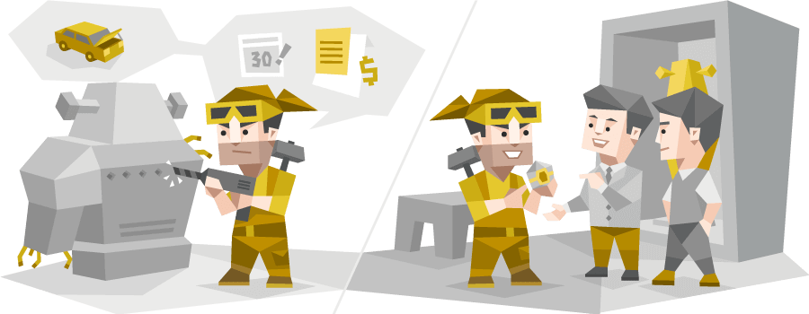

G. Jung의 심리유형론 을 바탕으로 하여 Katharine Briggs와
Isabel Briggs Myers 에 의해 연구개발된
성격유형지표로서 융이 말하는 선천적으 로 타고나는 개인의
심리경향을 발견하고, 그 경향에 따라 개인의 환경에 반응하는
태도가 다름을 이해함으로써 자신과 타인의 성격역동을 이해
하는데 아주 유용하게 사용되고 있는 도구입니다.
